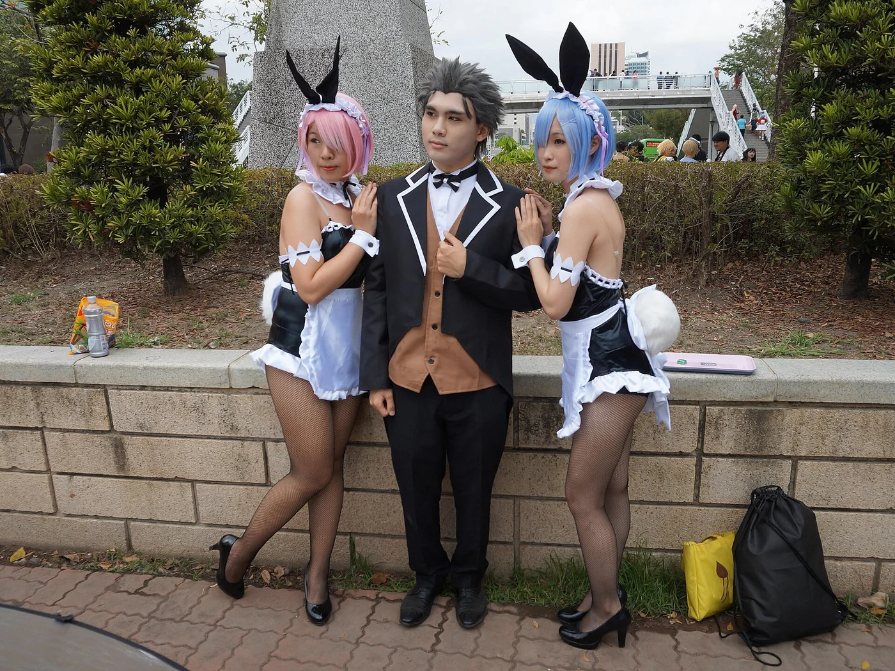
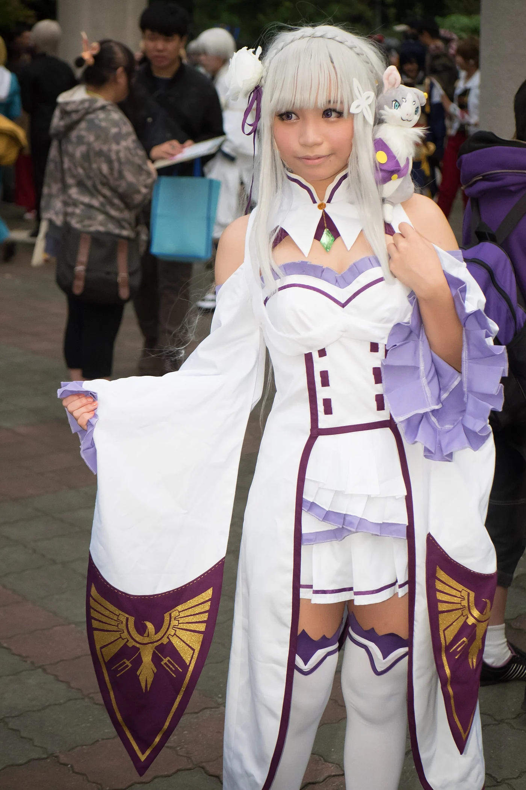
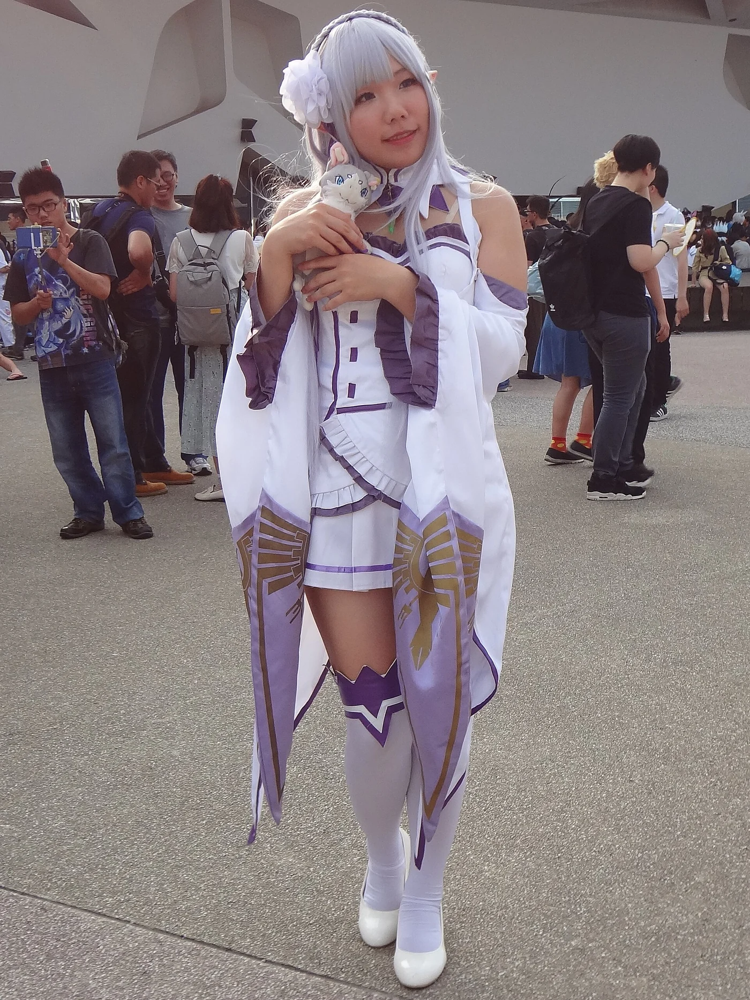
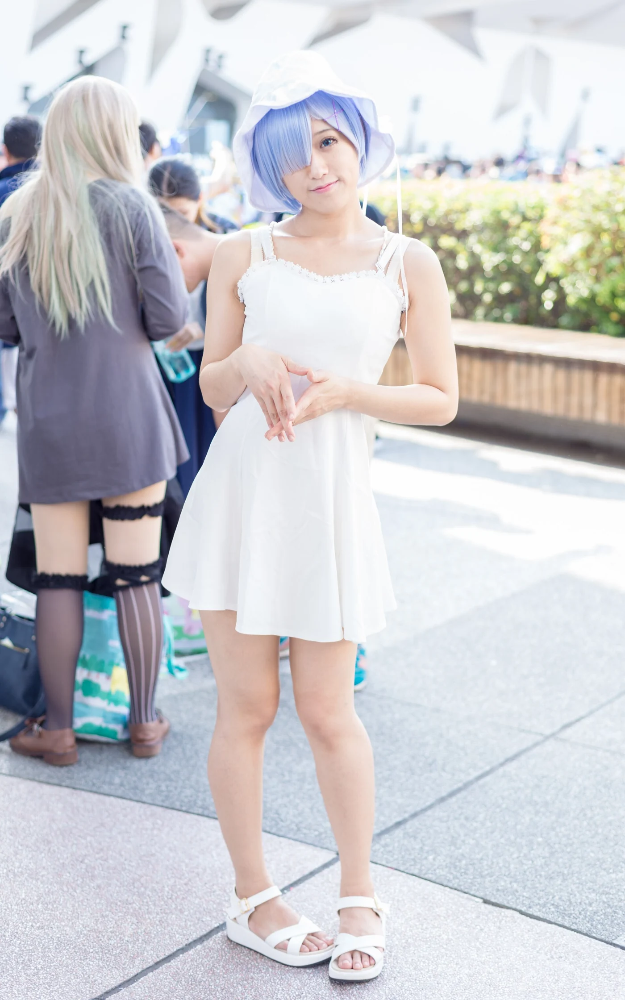

Re:Zero Seasons 1-3: The Complete Story So Far (Every Arc Explained)

Re:Zero is one of those shows people bounce off in episode one and then cannot stop talking about by episode eighteen. It looks like a standard isekai — ordinary Japanese teenager wakes up in a fantasy kingdom — and then it does something far crueller and far more interesting with him.
Before you start Season 4, or before you decide whether to start at all, here is the whole story up to that point: three seasons, 66 episodes, and every arc that matters. Season 4 has its own full guide — the link is at the end of this post.
The one rule you have to understand
Subaru Natsuki has exactly one power, and it is the worst power in fiction: Return by Death.
When he dies, time rewinds to a checkpoint. He keeps his memories. Nobody else does. And there is a hard limit on top of it — if he tries to tell anyone what happens when he dies, something stops him. The witch's hand closes around his heart and squeezes until he shuts up.
That single rule is what makes Re:Zero different from every other isekai. Subaru is not overpowered. He is a physically ordinary teenager who has to solve problems by dying repeatedly, remembering what killed him, and doing better next time. The show is less a power fantasy than a study of what that does to a person's mind.

Season 1 (2016) — 25 episodes: the capital, the mansion, and the cult
Season 1 aired from April to September 2016, animated by White Fox and directed by Masaharu Watanabe. It adapts the first three arcs of Tappei Nagatsuki's light novels, and it is structured as three escalating tests — each one longer, crueller, and less survivable than the last.
The first arc is a mystery in a city. Subaru arrives in the capital of Lugunica with no explanation and no powers worth the name. He meets a silver-haired half-elf named Emilia, helps her chase down a stolen insignia, and follows the trail to a loot house on the edge of the district. There he meets Elsa Granhiert — a soft-spoken assassin nicknamed the Bowel Hunter — and dies for the first time. Then he wakes up on the same street, at the same hour, with the same conversation happening around him.
What follows is the show teaching its own rules the hard way. Subaru dies again. And again. Each loop he learns one more piece: who is hunting Emilia, why the insignia matters, that a girl called Felt and an old man called Rom are not the villains, and that the man who can actually stop Elsa is Reinhard van Astrea, the Sword Saint, who arrives almost casually and ends the fight in seconds. The arc resolves not through strength but through Subaru finally assembling enough information to talk everyone out of a massacre.
The second arc moves to Roswaal's mansion. Subaru collapses from mana exhaustion and wakes up as a servant in the household of Roswaal L Mathers, a clown-faced margrave who employs two maid sisters and keeps a small girl in a library.
The household is where the show slows down and becomes something better than a thriller. Ram is sharp-tongued and openly contemptuous, and she is missing her horn. Rem is quiet, capable, apologetic, and convinced she is the spare twin — the one who should have been born instead. Beatrice is a four-hundred-year-old spirit in a child's body who speaks in riddles and refuses to leave her library. Puck is a cat-shaped spirit with a smile that never quite reaches his eyes.
Then the arc turns into a murder mystery where the killer is a curse. Subaru dies in his sleep, repeatedly, and the answer is a mabeast-linked curse passed through dog bites. The emotional payoff is Rem's: her oni heritage, the sister she failed, and the episode where she tells Subaru she loves him and he — gently, honestly, and devastatingly — tells her he cannot return it, because he loves Emilia. That scene, and Subaru's follow-up speech about hating himself, are why people still argue about this show a decade later.

The third arc is a war. The Royal Selection is introduced: five candidates competing for the empty throne. Emilia, sponsored by Roswaal. Felt, a thief from the slums. Crusch Karsten, the stern duchess. Anastasia Hoshin, the merchant. And Priscilla Barielle, who is exactly as insufferable as she is competent.
Subaru, having learned nothing about humility, makes a public fool of himself in front of the entire court and loses Emilia's trust. Then the Witch Cult attacks. The White Whale — a flying mabeast that erases the memory of everyone it kills — has to be brought down, and doing it requires an alliance of convenience with Crusch's forces and the old soldier Wilhelm van Astrea, who has been hunting that whale for fourteen years because it killed his wife.
And then there is Betelgeuse Romanee-Conti, the Sin Archbishop of Sloth. A man who twitches, giggles, weeps, and calls love "slothful." He can transfer his consciousness into any of his followers, which means killing him once accomplishes nothing, and he turns one of Subaru's allies into a vessel while the audience watches. He is the first genuinely frightening villain the series produces, and the fight against him is won by grinding through loop after loop until Subaru knows every one of his "fingers."
And then the ending takes something back. In the aftermath, Ley Batenkaitos — the Sin Archbishop of Gluttony — eats Rem's name and her memories. She falls into a coma. And everyone in the world forgets she ever existed. Her sister does not know she has a sister. Her friends do not recognise her face. Only Subaru remembers her, and he cannot explain why without dying.
That is how Season 1 ends: a victory with a hole in it, and a promise the series has still not fully paid off. A Director's Cut re-edited the season into 13 longer episodes in 2020, and it is the better way to watch it now.
Season 2 (2020-2021) — 25 episodes: the Sanctuary, and everyone's past
Season 2 was delayed by the pandemic, then aired in two parts: 13 episodes from July to September 2020, and 12 more from January to March 2021. It adapts the fourth arc, and it is the point where Re:Zero stops being a survival story and becomes a psychological one.
The setting is the Sanctuary — Roswaal's ancestral land, sealed behind a barrier that traps anyone with mixed blood inside. Half-elves, half-demons and beast-people live there under a curse generations old, and the only way out is for someone to pass three trials inside a tomb. Nobody has managed it in four hundred years.
That someone has to be Emilia, because the barrier answers to her. And the trials are not fights. They are confrontations with her own past: the frozen forest she grew up in, her aunt Fortuna, the kind man she called Geuse long before he became Betelgeuse, and the day everything she loved was destroyed in front of her.
The witches arrive. Inside the tomb lives Echidna, the Witch of Greed, who offers Subaru exactly what he has wanted since episode one — someone he can talk to about Return by Death without dying for it. Around her sit the other Witches of Sin: Minerva, who heals by taking on pain; Typhon, a child who judges guilt; Sekhmet, who is too lazy to stand; Daphne, who created the mabeasts; Carmilla, who cannot be looked at; and the one nobody says the name of.
These conversations are the best-written dialogue in the series, and they are also a trap. Echidna's interest in Subaru is real and completely amoral — she is a researcher, and he is the most interesting specimen she has ever met. The season is smart enough to let the audience enjoy her company before it shows what she actually is.
Roswaal's secret falls apart. The margrave has been following a book that tells him the future. He has been in love with Echidna for four hundred years. And he has been manipulating everyone around him — including arranging for the mansion to be attacked — to force Subaru into becoming strong enough to bring her back.
When Subaru finally refuses him, it is one of the most satisfying confrontations in modern anime, because it is not a fight. It is Subaru accepting that he might lose, and choosing to lose on his own terms rather than win on Roswaal's. Roswaal, whose entire four-hundred-year plan depended on Subaru behaving like a protagonist, has no answer to that.
Beatrice's four hundred years get explained, and it is one of the saddest stories the show tells. She was left waiting in a library by someone who told her to wait, and she has been obeying an instruction whose author is long gone, refusing every contract offered to her since, because accepting one would mean admitting the first person is not coming back.
Garfiel Tinzel gets a full arc as the arc's antagonist-turned-ally — a teenager who is terrified of the outside world, has built his whole identity around protecting the Sanctuary, and is secretly the reason it is still sealed. Ryuzu Meyer exists as dozens of identical copies, each one a failed attempt to preserve the original. Otto Suwen, the merchant who has been a joke since Season 1, turns out to be the most competent person in the cast when things go wrong.
And the mansion gets attacked anyway. While Subaru is trapped in the Sanctuary, Elsa and Meili — the assassins from Season 1 — hit Roswaal's house. The defence falls to Frederica, Petra, and a Beatrice who has to decide whether to finally do something. It is the subplot that makes the second cour work, because it gives the supporting cast stakes of their own instead of leaving them to wait for Subaru.

Season 2 ends with the Sanctuary freed, Roswaal broken and repentant, Emilia finally clearing her trials, Garfiel reconciled, and Subaru having chosen — openly, in front of everyone — to keep going. It also ends with Rem still asleep and still forgotten, which is the wound the rest of the series keeps pressing on.
Season 3 (2024-2025) — 16 episodes: the battle for Priestella
Season 3 changed directors — Masahiro Shinohara took over from Masaharu Watanabe — and changed format, splitting into two eight-episode arcs: the Attack Arc in October and November 2024, and the Counterattack Arc in February and March 2025. It adapts the fifth arc, and it is the most action-heavy the series has ever been.
The setting is Priestella, the Watergate City — a canal city of bridges, flooded streets and stone squares, where Emilia's camp has been invited to negotiate over a magic stone. It is supposed to be diplomacy. Within one episode it is a siege.
Four Sin Archbishops hit the city at once, and each one attacks a different thing.
Sirius Romanee-Conti, the Archbishop of Wrath, weaponises grief. Her power links people's emotions together, so that a crowd can be turned into a mob, and a mob into a lynch mob, and any attempt to fight back makes it worse. She is the reason the arc's opening episode feels like a panic attack.
Regulus Corneas, the Archbishop of Greed, is effectively untouchable — his authority stops anything from reaching him — and he monologues endlessly about his rights and his wives. He is unbearable on purpose, and the season knows exactly how long to let him talk before it makes him small.
Capella Emerada Lugunica, the Archbishop of Lust, reshapes bodies. She turns people into monsters, into animals, into things that cannot speak, and the show is careful not to linger on what she does to the ones she keeps. She is the cruellest villain in the series, and the least theatrical about it.
Ley Batenkaitos, the Archbishop of Gluttony — the same one who ate Rem — eats names and memories. He is the one who makes the arc personal, and he is the one who gets the last word.
The other royal candidates get their moments. Reinhard van Astrea finally fights properly, and the show makes clear that the Sword Saint is not a trump card but a natural disaster with good manners. Priscilla Barielle is exactly as insufferable and exactly as effective as she claims to be, and gets the arc's most satisfying single blow. Anastasia Hoshin turns out to be running a much colder calculation than anyone realised, and her relationship with her spirit Echidna-copy becomes the setup for Season 4.
Wilhelm van Astrea is the heart of it. The old man who killed the White Whale in Season 1 has to fight Theresia — his dead wife, the former Sword Saint, brought back as a puppet. It is the payoff to a story that started with a single line about revenge in Season 1, and it is the best-directed sequence White Fox has produced for this series.
Julius Juukulius is the tragedy. The knight who once beat Subaru in a duel, and who spent two seasons as the polished, correct face of the kingdom, gets a full arc about what his manners cost him. He is forced to confront the fact that his chivalry was partly performance, and that the people he was protecting were doing the real work. He grows. And then, in the final episode, his name is eaten by Gluttony — which means that for everyone in the world except Subaru, Julius Juukulius never existed.
So where does Season 4 start?
Immediately after Priestella. Subaru, Emilia, Beatrice, Julius and a small party leave the Watergate City and cross the Auguria Dunes — a desert full of magic beasts — to reach the Pleiades Watchtower, where a legendary sage is said to live. Season 4 adapts Arc 6 of the novels, runs 19 episodes, and it is the highest-rated season of the series so far.
It is also the one where Subaru loses the only thing that made him special.
Read the full Season 4 guide here: Re:Zero Season 4: The Complete Guide to the Loss and Recapture Arcs — episode structure, the amnesia plot, who is actually responsible, and how it ends.
Quick reference
- Season 1 — 25 episodes, 2016, arcs 1-3. The capital, the mansion, the Witch Cult.
- Season 2 — 25 episodes, 2020-21, arc 4. The Sanctuary and Emilia's trials.
- Season 3 — 16 episodes, 2024-25, arc 5. The battle for Priestella.
- Season 4 — 19 episodes, 2026, arc 6. The Pleiades Watchtower.
- Total — 85 episodes across four seasons, plus two OVAs: Memory Snow (2018) and The Frozen Bond (2019).
Frequently asked
Is Re:Zero worth starting in 2026? Yes. It is one of the few isekai that treats its premise as a psychological problem rather than a power-up, and the animation holds up.
What order should I watch it in? Season 1 (or the 13-episode Director's Cut), Memory Snow, The Frozen Bond, Season 2, Season 3, Season 4. The OVAs are optional but The Frozen Bond makes Emilia's Season 2 trials land harder.
Do I need the light novels? No. All four seasons are on Crunchyroll, subbed and dubbed.
Does it get less depressing? No. It gets better written.